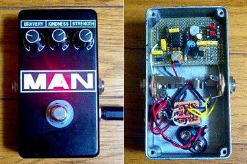
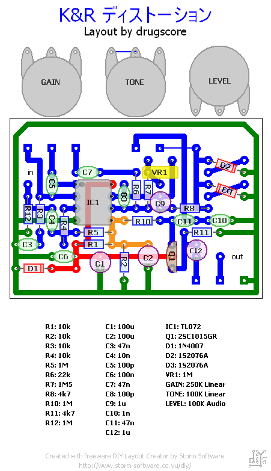
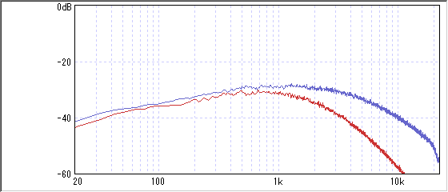
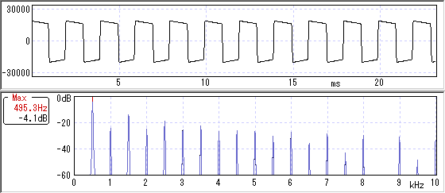

ひよこのページ ディストーション
2007年07月27日 カテゴリー：自作エフェクター（アナログ）

ひよこのページのディストーションです。基板とポットを一体にしてみました。
▽回路図
K&R→ディストーションKIT マニュアル
▽レイアウト

ゲインを上げるためのトリマーをつけています。また、ダイオードは交換できるようにICソケットをつけてます。きちんと音は出ましたが間違ってる可能性はあります。写真では電解コンデンサが斜めになっていたりしますが良い大人はマネしてはいけません。
回路としてはMarshall The Guv'norと似ています。それにならってダイオードはLEDにしてみました。まさに王道のディストーションといった感じでしょうか。使いやすいです。もう少し高音が出てもいいかもしれませんが、でかい音を出してないのでなんともいえません。
見た目はProco RATみたいにしてます。ディストーションはLEDが赤っていう勝手なイメージがありますね。せっかくポットの配列を横一列にしたのでノブをそのうちそろえたいです。
追記：ノブをそろえたので画像差し替え・レイアウト若干修正
再追記：レイアウト若干修正
▽周波数特性

青がトーンフル、赤が0です。ゲインをフルにして測ったからなのか、かなりミッド寄りという感じですね。
▽波形・倍音特性

偶数次倍音もけっこう出てます。
（2009年1月4日作り直しました）